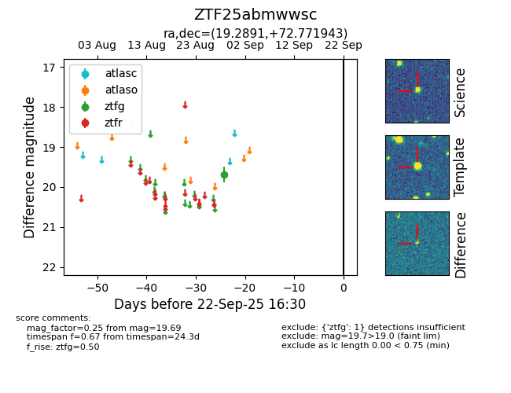

FINK: ZTF25abmwwsc
Lasair: ZTF25abmwwsc
ALeRCE: ZTF25abmwwsc
ZTF25abmwwsc (ztf,fink)
equatorial (ra, dec) = (19.2891,+72.77194)
galactic (l, b) = (124.8619,+9.99664)

last ztfg=19.69
1 ztfg detections